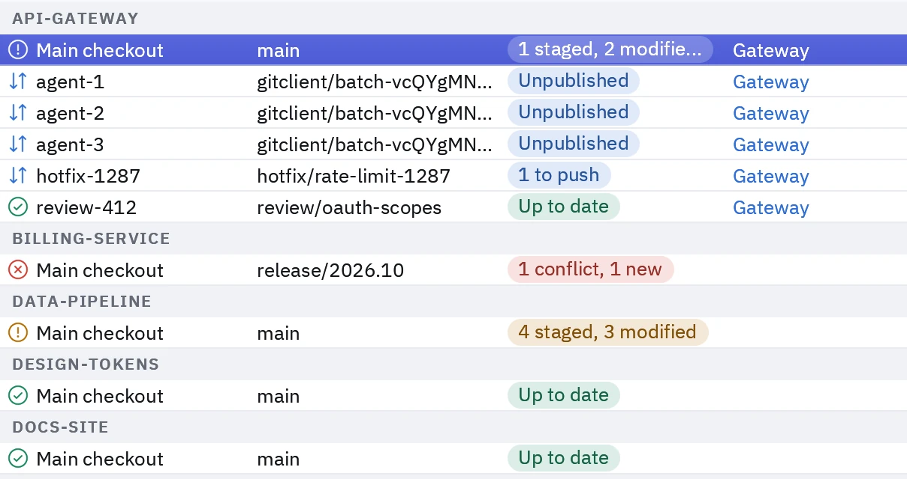
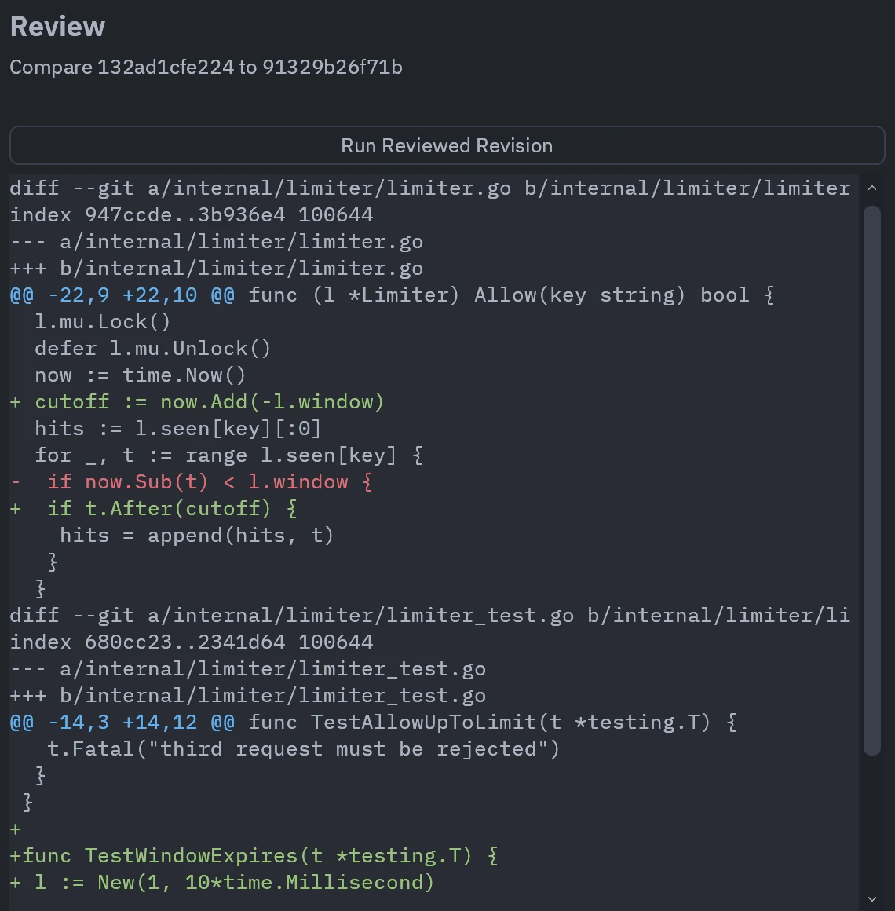
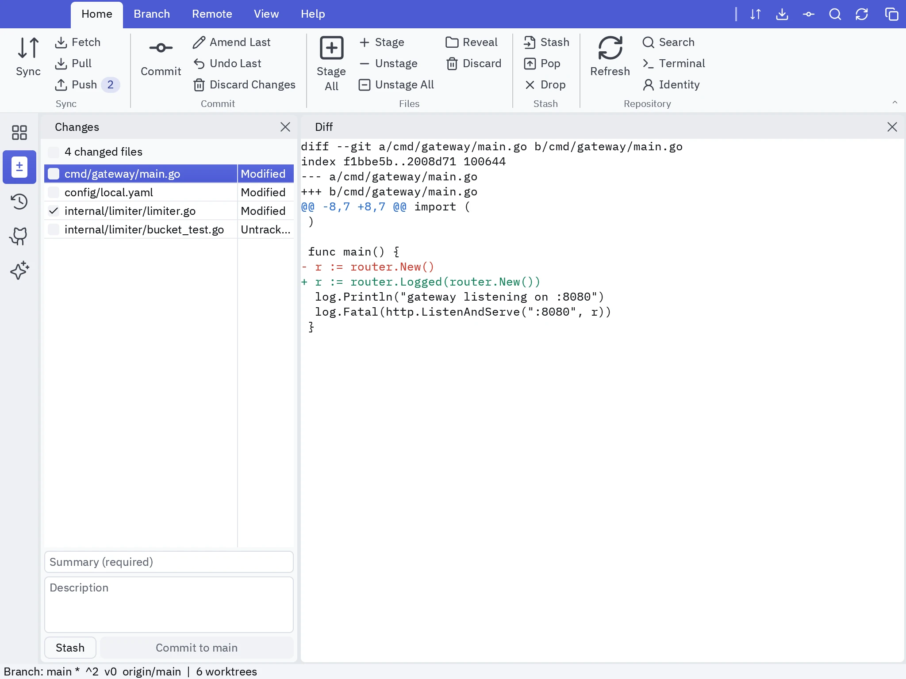
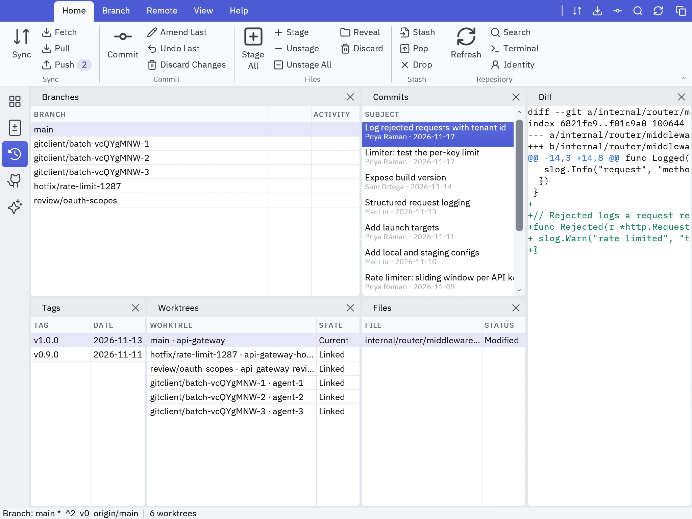

See the state of every checkout at a glance, run each branch the way it wants to be run, and let three AI agents work side by side — each in its own worktree.

Open a workspace and Git Client reads all of it in the background — branches, ahead and behind, staged and new files — then tells you in words.
The main checkout comes first, then each linked worktree wherever git put it. Switch to Needs attention and the clean ones step aside.

A launch.xml is committed with the code, so a level added on a branch appears only in that worktree. Press Run and the target starts in a real terminal, colours and progress bars intact.

Hand out three tasks at once to Codex or Claude Code. Nobody steps on anybody's files, and what comes back is a commit you can read and run.
One prompt and one agent per row. The base is your current commit.
A branch, worktree and terminal each. Stop one without touching the others.
A finished run is saved as a local commit on its task branch.
Read the diff against the base, then run that exact revision in its own worktree.


Select a task and the Review pane shows its diff against the original base. Run Reviewed Revision opens a detached worktree at the snapshot and starts the default target from its own launch.xml — submodules and build step included.
Shortcut: ⌘ 4

“The menu tree is the complete map of what you can do. Toolbars, context menus and shortcuts all point back to it.”
How Git Client is built
Changes, History and GitHub, each with its own docking layout. Drag a tab onto another pane, or near an edge to split it.

